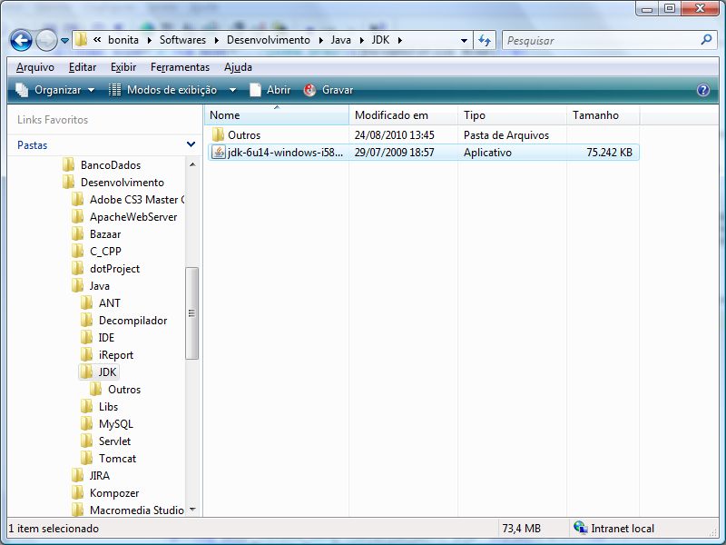
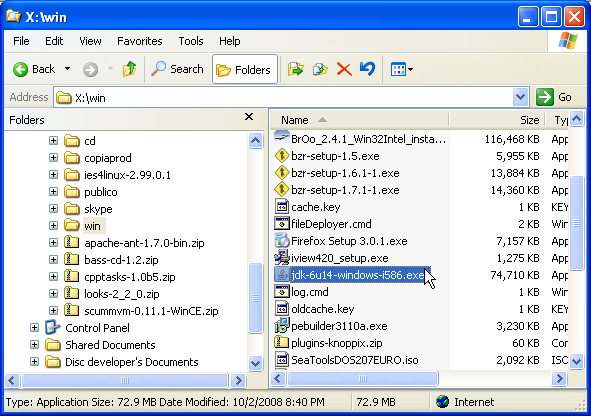
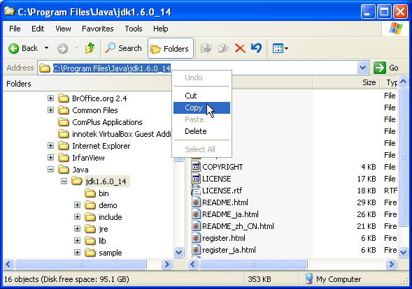
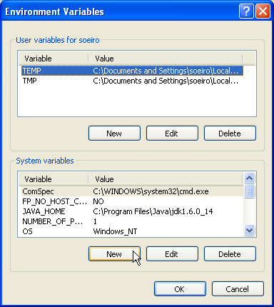
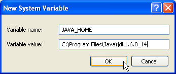
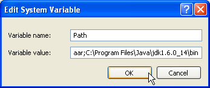

[Documentation Home]
[Installation Home]
Alphalinc Software Development Environment (ASDE) - Java installation
Please pay close attention to the following installation instructions. There are two main types of packages that bring the Java Virtual Machine:
- The Java Runtime Environment - only the runtime packages are available.
This is the default installation on many desktops, since not everybody is developing java
software. It may be the case that you already have this version installed on your system, but you
must still install the complete development kit.
- The Java Development Kit - this package includes the development tools (compiler,
documentation generator, libraries, etc) and a complete Java runtime environment. There are
variations of this package. Some include a Java IDE, others include libraries of Java Enterprise
Edition. The Alphalinc Software Development Environment needs only the standard edition.
This guide will go through all steps needed to download, install and configure it.
- Go to \\loira\Softwares\Desenvolvimento\Java\JDK
(or download it from http://java.sun.com) and copy the
jdk-6u14-windows-i586.exe file to your computer.
|

Figure 1 - Software folder
|
- Click on the file you have just copied to start the Java installation wizard.
|

Figure 2 - Installation wizard
|
- Click on Next until installation is complete. You can opt for not installing Java source files, because
they will not be needed.
|

Figure 3 - Source Code not checked for installation
|
- Open Windows Explorer and copy to the clipboard
the exact path of Java installation. This
path is called JAVA_HOME. You will use this value for two environment variables: JAVA_HOME and PATH.
In case you forget where this directory is, you just have to search the system for the file java.exe.
JAVA_HOME is the directory that goes from the drive letter (i.e. C:) up to the directory just
before /bin, but passes by the JDK directory. Example:
C:\Program Files\Java\jdk1.6.0_14\bin (notice that \bin doesn't belong
to JAVA_HOME path).
|

Figure 4 - How to figure out the JAVA_HOME directory
|
- Right click on the "My Computer" icon and choose the menu Properties
|

Figure 5 - Opening the system properties
|
- Click on the Advanced tab, then on the button Environment variables
|

Figure 6 - Environment variables tab
|
- Search for JAVA_HOME among the available System variables. If JAVA_HOME is seen, click
on the Edit button. Otherwise, click on the New button to create it. Make sure
you click on the New button in the System variables area.
|

Figure 7 - Creating or editing the JAVA_HOME variable
|
- Make sure that the values for JAVA_HOME are filled with the name
of the exact directory where JDK was installed.
|

Figure 8 - Correct values for JAVA_HOME
|
- Now, select the PATH environment variable (from the Systems variable list)
and click on the Edit button.
|

Figure 9 - Preparing to add JAVA_HOME\bin to the system PATH
|
- Scroll to end of text of the Variable value field, add a semicolon ; and
then add the JAVA_HOME path plus \bin. It should look like the following figure
(or you may use '%JAVA_HOME%\bin'):
|

Figure 10 - Including JAVA_HOME\bin to the system PATH
|
- When you add or change a system variable, you have to open a new prompt to see its effects. So,
close any old command line prompt windows that are open. Now you will test the installation.
First, go to start menu, and click on Run.
|

Figure 11 - Running an arbitrary program
|
- Type CMD in the box and click on the Ok button.
|

Figure 12 - Running an arbitrary program
|
- You will then see the Command line prompt window.
|

Figure 13 - Command line prompt window
|
- Test if the JVM has been installed correctly by typing: java -version:
C:\Documents and Settings\soeiro>java -version
java version "1.6.0_14"
Java(TM) SE Runtime Environment (build 1.6.0_14-b08)
Java HotSpot(TM) Client VM (build 14.0-b16, mixed mode, sharing)
If you see the message above, skip to the next test (step 16).
Pay close attention if you see any message like:
'java' is not recognized as an internal or external command,
operable program or batch file.
If java is not recognized, it generally means that:
- Now test if the JDK tools were correctly installed and configured by typing:
C:\Documents and Settings\soeiro>javac -version[ENTER]
javac 1.6.0_14
If you see the above message in the command line windows your are finished. Congratulations.
Now proceed to the install ant step.
Pay close attention if you see something like:
'javac' is not recognized as an internal or external command,
operable program or batch file.
When javac is not recognized, some of the following are generally the cause:
- The Java Development Kit was not installed. In this case, go back and start over the beginning of
Java installation.
- The Javac.exe directory is not part of the system path variable. In this case,
go back and review the PATH and JAVA_HOME configuration processes.
- There might be an older installation of the Java Runtime environment. The entry for that
installation might be located before this new Java installation. This way, things might still
go wrong. You want to have the same version displayed by the commands: java -version and
javac -version. Please review the full Java installation process.
This document is the file projectDirectory/Implementation/docs/installation/java-installation.html
Please feel free to make corrections and commit it to the repository.